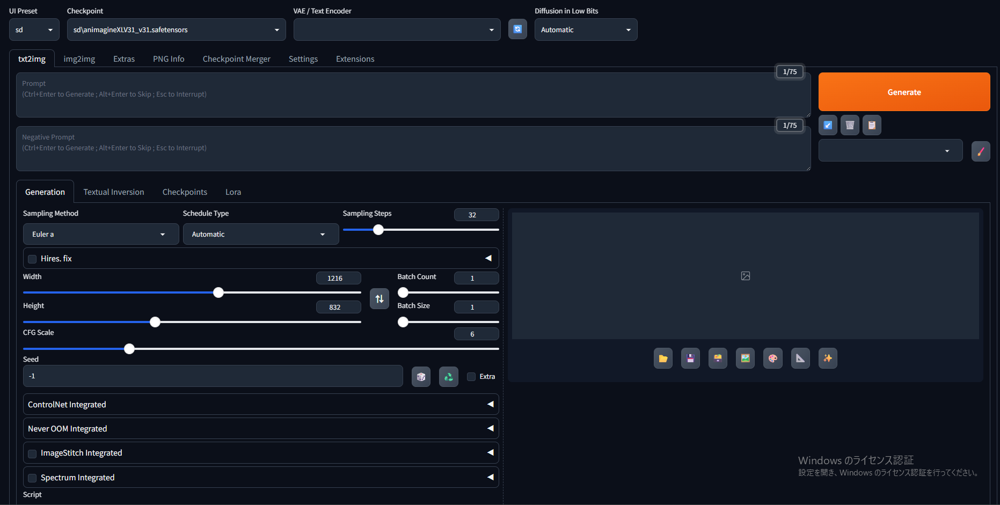
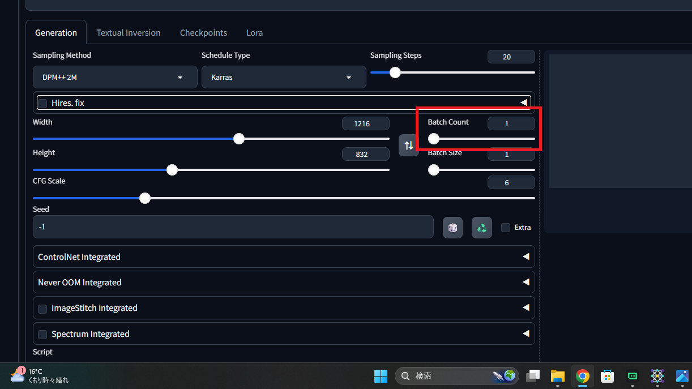
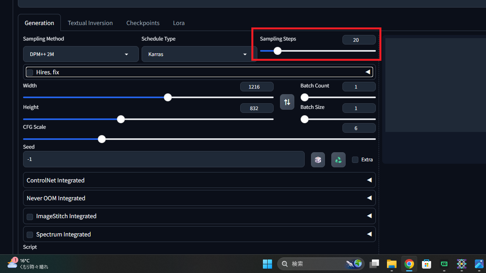
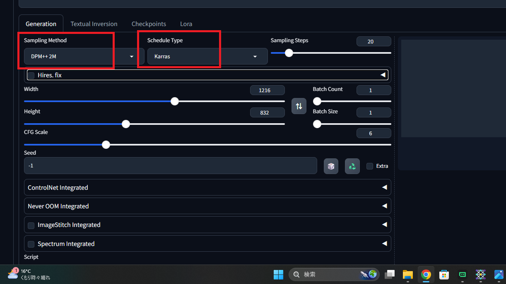
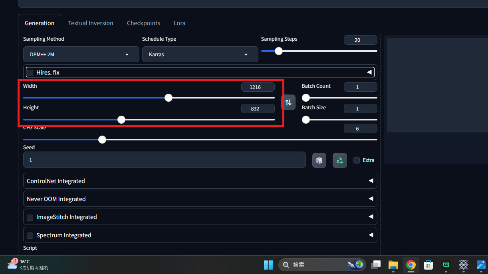
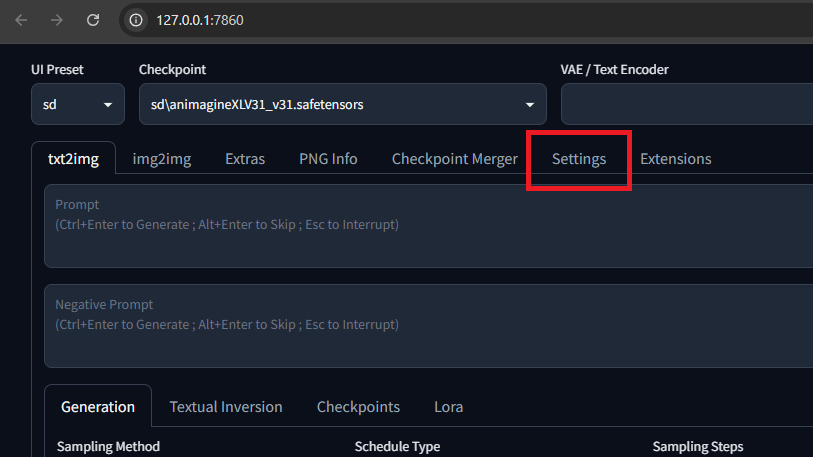
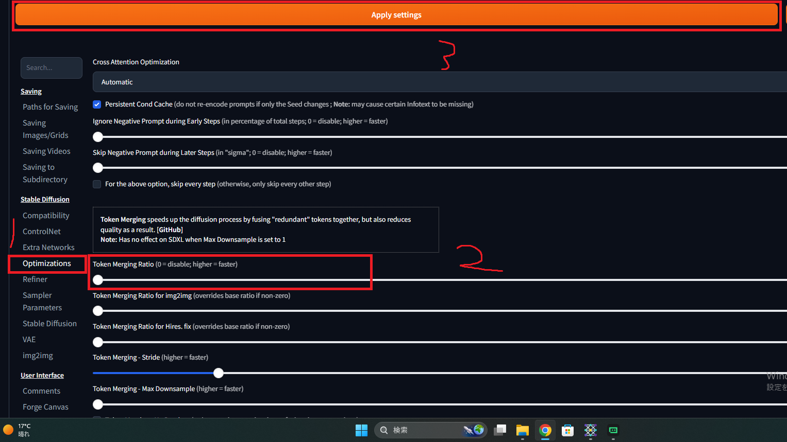
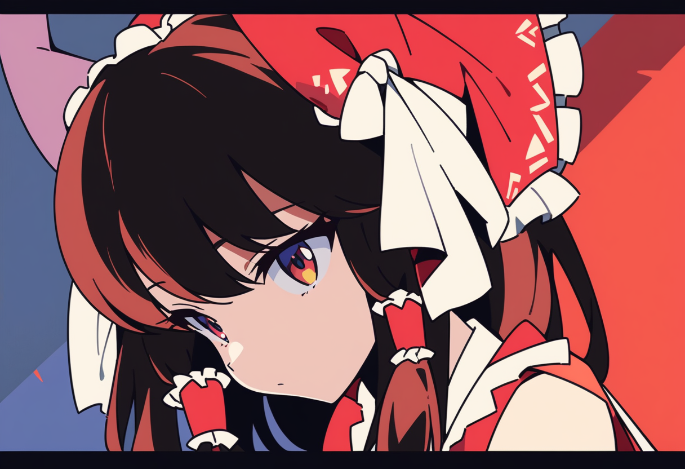

VRAM8GBでStable Diffusion/Forge高速化！ webUIでの高画質化＆高速化設定!
どうもみなさんこんにちはこんばんはnyakorと申します。今回は前回の記事の続きでAI画像生成のStable Diffusion/Forge(webUI)の高速化設定プラス高画質化設定を紹介します。僕の場合は3秒も早くなったのでぜひ見ていってください！/p>
設定の変更
これで画像を生成していきます。webUIです。今回はこれで設定を変えます。写真の赤いところを写真と同じにすれば今回の記事のおすすめ設定と同じ設定になります。(モデルによっても変わるのでご注意ください)使ってるモデルはAnimagine XL V3.1ってやつです。

効果がある設定を8個紹介します。人によっては3秒くらい変わると思います。
Batch sizeを1に固定: 一度に複数枚計算すると時間が超伸びてメモリエラーになる可能性があるので、この設定は強いグラボとかVRAMが多い人以外は使わないほうがいいです。

不要なプロンプトの削除: beautiful, high qualityなどの盛りすぎは計算を複雑にして時間がかかるので、必要なものだけにしましょう。
Stepsを20前後まで下げる: 30以上は時間が伸びるだけなので、20~25くらいが画質を落とさず早くする黄金比です。(モデルによっては上げないと綺麗にできません)

Sampling MethodをDPM++ 2Mにする: DPM++ 2Mは1回計算したら次はこれくらい計算すれば完成に近づく。と過去の計算から計算して予測するんです。だから、無駄な動きがなくて早く綺麗に作れます。しかも表情も指定分によく従ってくれるのでガチャ要素があまりないところもいいところです。
Schedule TypeをKarrasにする: 画像生成の計算には、最初は大胆に削り、後半は繊細に削るというスケジュールがあるんです。AUTOMATICは最初から最後まで同じペースで計算しようとしてしまい遅くなりがちなのですが、Karrasは最初は特に大胆に計算してそれから超細かく計算するので時間も短くなるし細かく綺麗になるんです。しかもステップが少なくても30~40ステップくらいの高クオリティ画像ができるんです。(モデルによる)

ベース解像度を高くしない: 最初から高いと時間がかかるのでやめましょう。おすすめは1216×832です。

Hires. fixはオフ: 高画質化(拡大は)パワーを使うのでお気に入りの一枚が出来てからオンにしましょう。
Token merging (ToMe)を0.3にする(おすすめはしません): AIは普通、画面を細かいつぶつぶ（トークン）に分けて計算するのですが、白い背景を作るとき全体のつぶつぶを別々に計算するのは時間がかかりますよね？Token mergingは似ている計算をまとめて計算するので時間も短くなって20%ほど時短できるんです。ちなみにやらないほうがいいです。僕がやったら画質落ちました。0.3より下のほうがいいです。やり方はsettingsタブからoptimizationsを押してその中にあるスライダーを動かすだけです。やめたほうがいいです。


ちなみに僕がpony Diffusion V6 XLを使ってToken merging (ToMe)を0.3にしたらこんな画像出来ましたｗｗｗ(設定が会わなかったみたいです)

やるなら0.1のほうがいいです。でも速度上がってる感じはしませんでした...↓0.1

ということでどうだったでしょうか？今回の記事はAI画像生成の速度あげるのと画質あげる設定を解説しました。AI関連の記事はページの一番下にリンク張っておくので見てみてください。見てくれてありがとうございました。よい一日を！

VRAM 8GBのRTX 2070 SuperでStable Diffusion／Forgeを使ったAI画像生成の体験記です。負荷のかかる設定の罠、VRAMを節約するヒントなどを紹介します。

ホームに戻る